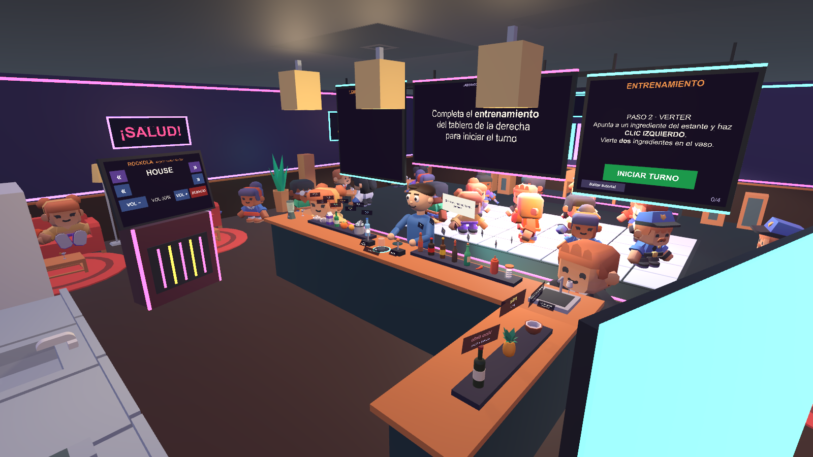
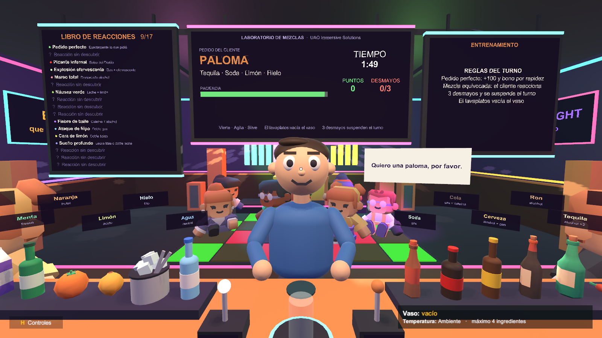
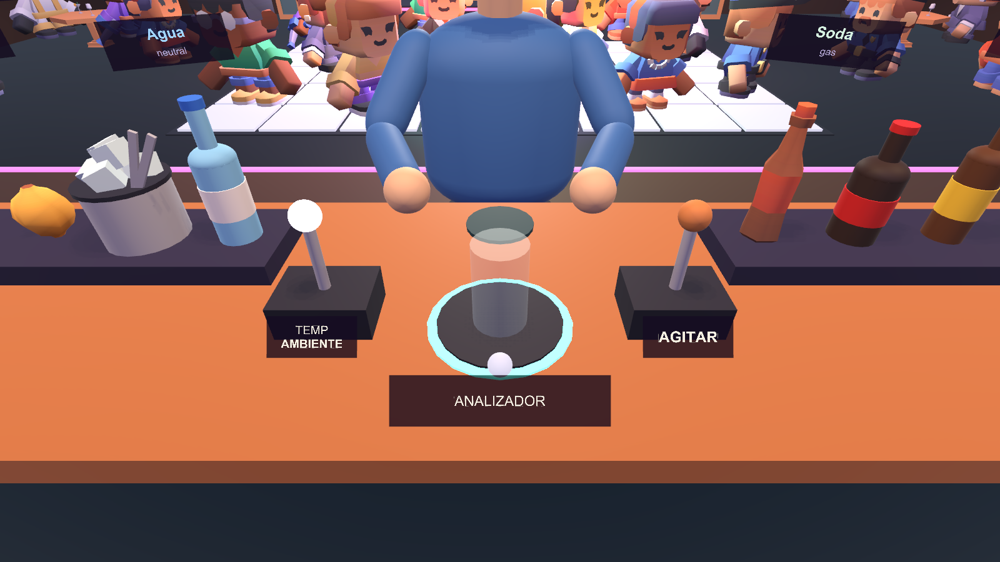
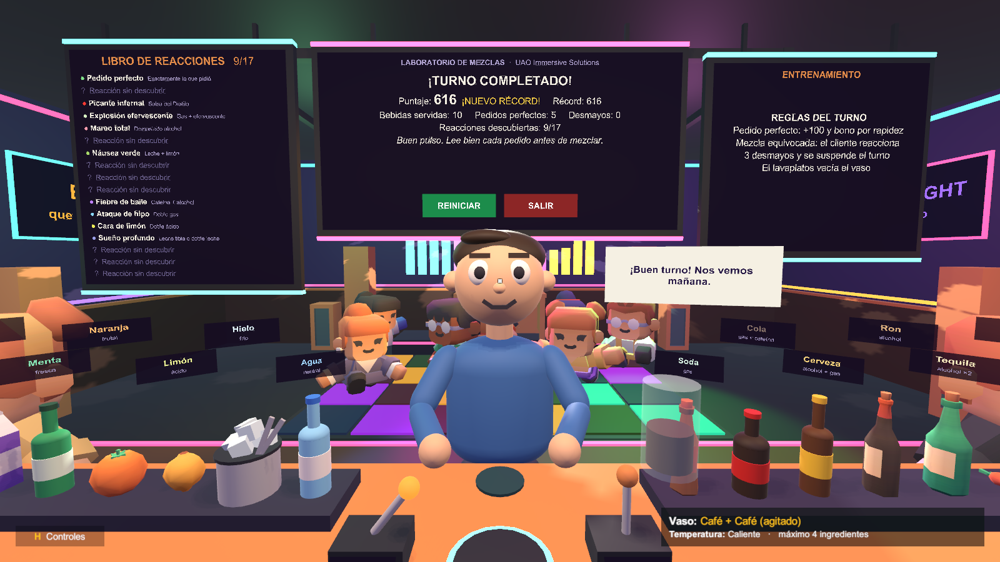
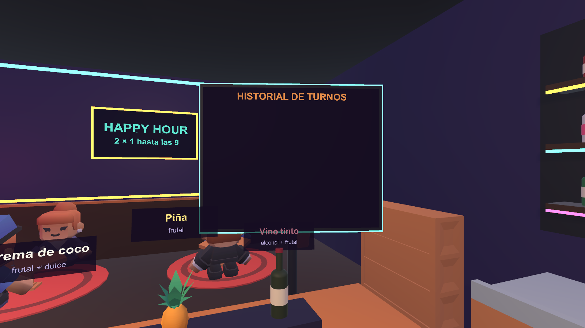
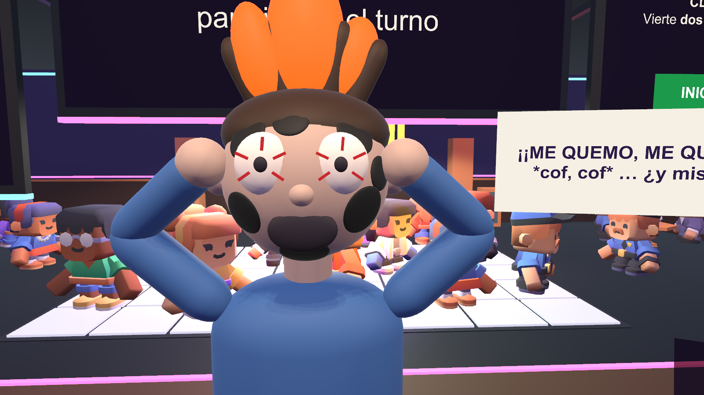
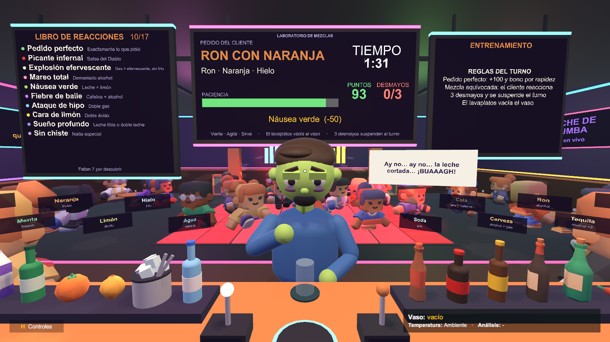
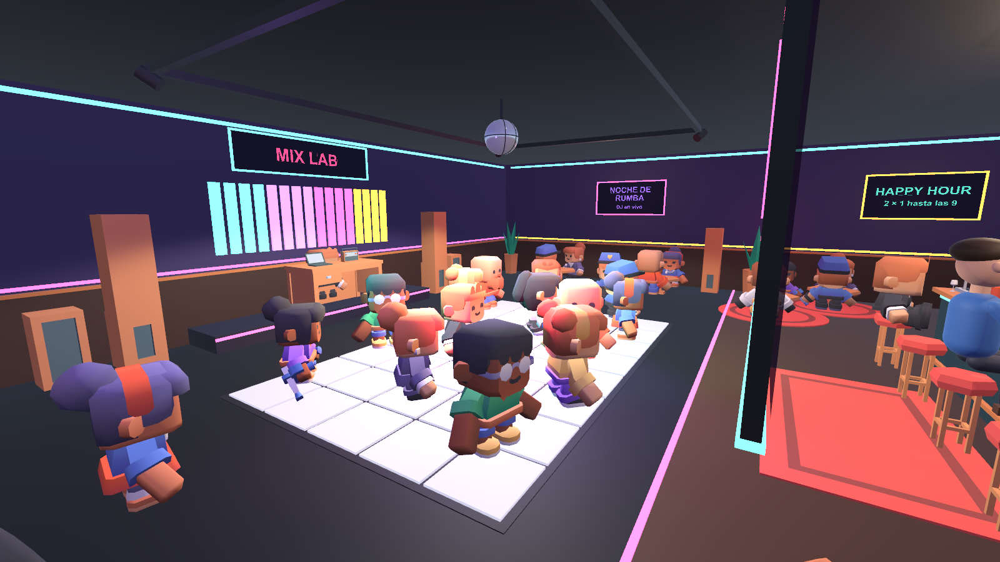

Proyecto Final · Fundamentos de Realidad Virtual 2026
Opción 3 del enunciado: Laboratorio Científico XR
Unity 6 (6000.0.58f2) · XR Interaction Toolkit 3 · Meta Quest 3 · también jugable en PC

Cómo leer esta guía: los capítulos 1 a 3 son lo mínimo para el pitch. Del 4 al 9 explican el juego y sus reglas. Del 10 al 19 explican cómo está construido por dentro (lo que evalúan en organización, scripts y datos). Los capítulos 20 a 23 son para prepararse: rúbrica, preguntas difíciles, glosario y guion de demo. Los recuadros naranjas son frases listas para decir en voz alta.
El pitch es corto y va dirigido al profesor: tiene que dejar claro qué es, por qué cumple el enunciado y qué lo hace interesante. Abajo hay tres versiones según el tiempo que tengas.
El documento del proyecto (docs/Proyecto_Final_VR_2026.pptx) tiene cuatro partes. Conviene tenerlas claras
porque cada parte de nuestro juego responde a una de ellas.
Una empresa ficticia, UAO Immersive Solutions, hace simulaciones en VR para instituciones que quieren experiencias gamificadas y de aprendizaje activo. Cada proyecto debe ser inmersivo, intuitivo y evaluable, con el usuario interactuando con objetos, resolviendo tareas y aplicando conocimientos. Debe hacerse en Unity con XR Interaction Toolkit para Meta Quest 2/3 y demostrar cinco cosas:
| Debe demostrar | Dónde lo demostramos |
|---|---|
| Dominio técnico de XR Toolkit | XR Origin, Grab Interactable, Simple Interactable, Socket propio, teletransporte, UI por rayo, háptica (cap. 13) |
| Integración de programación | ~40 scripts en C# con lógica separada, eventos y pruebas (cap. 10–12, 19) |
| Diseño de interacción inmersiva | Verter inclinando, agitar sacudiendo, vaciar volteando, servir en el posavasos |
| Optimización para VR | Regulador de calidad, mediciones, ajustes de Android (cap. 18) |
| Flujo interactivo estructurado | Entrenamiento → turno → cierre, con máquina de estados (cap. 4 y 10) |
Había cuatro: Control de Calidad XR, Riego Inteligente, Laboratorio Científico XR y Viaje Alucinante. La opción 3 dice: "el usuario manipula elementos químicos y compuestos para generar nuevas sustancias mediante simulación interactiva. Podrá combinar elementos químicos, activar reacciones, clasificar compuestos, estabilizar mezclas, descubrir nuevas fórmulas. Interacciones: grab interactivos, sockets químicos, botones de laboratorio, palancas de temperatura/presión, sistema de validación química."
prototipo-control-calidad y lo quitamos del proyecto para que quede limpio. Si el profesor pregunta, es parte del proceso de diseño.| Prueba ejecutable — 40% | |
|---|---|
| Calidad de interfaz de usuario | 15% |
| Calidad de implementación 3D | 15% |
| Calidad de interacciones | 25% |
| Calidad de inmersión | 25% |
| Montaje general | 20% |
| Sustentación — 60% | |
|---|---|
| Organización Unity | 15% |
| Calidad de scripts | 15% |
| Manejo de datos | 20% |
| Sustentación personal | 40% |
| Presentación personal | 10% |
Fíjate en esto: la sustentación vale más que la prueba, y dentro de ella la sustentación personal es el 40%. Es decir, que cada uno pueda explicar el proyecto pesa casi tanto como todo lo demás junto. Para eso es esta guía.

| Pregunta | Respuesta corta |
|---|---|
| ¿Qué es? | Un laboratorio de química en VR disfrazado de bar-discoteca. |
| ¿Quién es el jugador? | El encargado de la barra (el "químico"). |
| ¿Cuál es el objetivo? | Preparar lo que pide cada cliente antes de que pierda la paciencia, sumar puntos y no tumbar a 3 clientes. |
| ¿Qué son las "sustancias"? | 19 ingredientes, cada uno con propiedades (ácido, gas, alcohol, picante, lácteo, cafeína, frío, etc.). |
| ¿Qué es una "reacción"? | Lo que le pasa al cliente al beber: 17 posibles, desde "pedido perfecto" hasta "desmayo". |
| ¿Cuánto dura una partida? | Un turno de 4 minutos, más el entrenamiento inicial. |
| ¿Cómo se gana / pierde? | Se completa el turno al acabarse el tiempo; se suspende si 3 clientes se desmayan. |
| ¿En qué se juega? | Meta Quest 3 (APK, con las manos) o PC (mouse y teclado). Es la misma escena. |
| ¿Qué lo hace especial? | Reacciones visibles y exageradas, analizador químico, vaso que explota, bar vivo con música y público. |

Al entrar, el tablero de la derecha muestra el entrenamiento. Tiene cuatro pasos y cada uno solo avanza si el jugador lo hace de verdad (no hay botón de "siguiente"):
| Paso | Qué se enseña | Cómo lo detecta el juego |
|---|---|---|
| 1. Moverse | Joystick (VR) o WASD + mouse (PC) | La cabeza del jugador se desplaza más de 35 cm |
| 2. Agarrar y verter | Agarrar una botella e inclinarla sobre el vaso | El vaso llega a 2 ingredientes |
| 3. Agitar | Sacudir el vaso o tirar de la palanca | El vaso queda "agitado" |
| 4. Servir | Soltar el vaso en el posavasos | El cliente reacciona |
Al terminar aparece el botón INICIAR TURNO. También hay un botón "Saltar tutorial". Los textos cambian solos según si se juega en VR o en PC. Durante el entrenamiento el cliente es Ramiro, que reacciona igual pero sin puntaje.
| Meta Quest 3 | |
|---|---|
| Caminar · girar | Joystick izquierdo · derecho |
| Teletransporte | Joystick derecho adelante, apuntar, soltar |
| Agarrar | Botón lateral (grip), de cerca o de lejos |
| Verter | Inclinar la botella sobre el vaso |
| Agitar | Sacudir el vaso o tirar de la palanca |
| Temperatura | Arrastrar la palanca a izquierda/derecha |
| Vaciar | Voltear el vaso |
| Servir | Soltar el vaso sobre el posavasos |
| Botones | Rayo + gatillo |
| PC | |
|---|---|
| Caminar · mirar | WASD · mouse |
| Verter | Clic sobre el ingrediente |
| Palancas | Clic sobre la palanca |
| Agarrar el vaso | Clic sobre el vaso |
| Servir | Con el vaso, clic sobre el cliente |
| Vaciar | Clic sobre el lavaplatos |
| Dejar el vaso | R |
| Pausa · ayuda | Esc · H |
| Música | M silencio · N canción · G género |
Cuando se acaba el tiempo (o hay 3 desmayos), el tablero central muestra: ¡TURNO COMPLETADO! o TURNO SUSPENDIDO, el puntaje, el récord (y si es nuevo récord), bebidas servidas, pedidos perfectos, desmayos, reacciones descubiertas y una frase de retroalimentación (por ejemplo "Buen pulso. Lee bien cada pedido antes de mezclar" o "Demasiados clientes fuera de combate. Revisa las mezclas peligrosas en el libro"). Hay botones REINICIAR y SALIR. El tablero de historial se actualiza con el turno recién guardado.


Este capítulo es el corazón de la defensa. El profesor va a querer saber si el juego "es" un laboratorio científico. La respuesta es sí, porque cada función que pide la opción es una mecánica concreta, no un adorno.
| Pide | En el juego | Dónde está en el código |
|---|---|---|
| Combinar elementos químicos | 19 ingredientes con propiedades. Hasta 4 por vaso, más temperatura y agitado. | Bottle, VrPourable, MixGlass |
| Activar reacciones | 17 reacciones que dependen de la suma de propiedades y la temperatura. | ReactionRules.Evaluate, Customer |
| Clasificar compuestos | El analizador marca la mezcla como estable, inestable o tóxica, en tiempo real. | MixAnalyzer, ReactionRules.Classify |
| Estabilizar mezclas | Lo explosivo o inflamable se neutraliza con frío. Si no, cuenta regresiva y el vaso estalla. | ReactionRules.WillExplode, MixGlass.ExplodeAtStation |
| Descubrir nuevas fórmulas | 38 recetas; libro de reacciones que empieza vacío y se llena al descubrirlas. Se guarda. | RecipeData, ReactionBookBoard, MixSaveRepository |
| Pide | En el juego | Componente |
|---|---|---|
| Grab interactivos | Las 19 botellas y recipientes, y el vaso, se agarran con la mano. | XRGrabInteractable |
| Sockets químicos | El posavasos del cliente: solo acepta el vaso con mezcla y al encajarlo se sirve. | CoasterSocket (hereda de XRSocketInteractor) |
| Botones de laboratorio | Iniciar turno, saltar tutorial, reiniciar, salir, rockola. | Canvas con TrackedDeviceGraphicRaycaster + XRUIInputModule |
| Palancas de temperatura/presión | Palanca de temperatura de 3 posiciones y palanca de agitar. | XRSimpleInteractable + VrLever |
| Sistema de validación química | Las reglas evalúan la mezcla, el analizador avisa antes y el cliente muestra el resultado. | ReactionRules + MixAnalyzer |
| Requisito | Cómo se cumple | Script |
|---|---|---|
| Onboarding VR | Entrenamiento de 4 pasos validados con acciones reales; enseña joystick, grip, inclinar, sacudir y soltar en el socket. | MixTutorial |
| Manipulación física | Botellas, vaso y palancas con la mano. | VrPourable, VrGlass, VrLever |
| Objetivos claros | El pedido en el tablero y en el globo del cliente, con ingredientes y temperatura. | MixBoard |
| Progresión | Libro de reacciones que se llena, récord, historial, clientes que cambian. | ReactionBookBoard, HistoryBoard |
| Temporizador | Turno de 240 s y paciencia de 50 s por pedido. | MixGameManager |
| Fallo | 3 desmayos suspenden el turno; si se acaba la paciencia, −30 y el cliente pide otra cosa; el vaso que estalla resta 30. | MixGameManager |
| Evento inesperado | A los 40 s y luego cada ~45 s: hora pico (paciencia ×2,2 durante 12 s) o apagón (luces al 12% y etiquetas ocultas durante 9 s). | MixGameManager.EventLoop |
| Sistema reactivo | Eventos C#: tableros, luces de la pista, público, tutorial y audio reaccionan a lo que pasa. | eventos OnReaction, OnStateChanged… |
| Puntuación verificable | Reglas fijas de puntos; todo queda en el JSON y el CSV. | MixGameManager, MixSaveRepository |
| Cierre | Panel final con resultado, estadísticas y retroalimentación; botones Reiniciar/Salir. | MixBoard |
Cada ingrediente tiene un conjunto de números (MixProps): agua, frío, ácido, frutal, menta, lácteo, cafeína, dulce,
gas, alcohol, picante, efervescente. Cuando el jugador mezcla, el juego suma las propiedades de todo lo que hay en el vaso.
Las reglas trabajan sobre esa suma. Por ejemplo, Tequila (alcohol 2) + Ron (alcohol 1) = alcohol 3.
| Ingrediente | Etiqueta | Propiedades | Ingrediente | Etiqueta | Propiedades |
|---|---|---|---|---|---|
| Agua | neutral | agua 1 | Cola | gas + cafeína | gas 1, cafeína 1 |
| Hielo | frío | frío 1 | Cerveza | alcohol + gas | alcohol 1, gas 1 |
| Limón | ácido | ácido 1 | Ron | alcohol | alcohol 1 |
| Naranja | frutal | frutal 1 | Tequila | alcohol ×2 | alcohol 2 |
| Menta | fresca | menta 1 | Ají | picante | picante 1 |
| Leche | lácteo | lácteo 1 | Salsa del Diablo | picante ×3 | picante 3 |
| Café | cafeína | cafeína 1 | Efervescente | reactiva | efervescente 1 |
| Azúcar | dulce | dulce 1 | Crema de coco | frutal + dulce | frutal 1, dulce 1 |
| Soda | gas | gas 1 | Piña | frutal | frutal 1 |
| Vino tinto | alcohol + frutal | alcohol 1, frutal 1 |
Hielo, limón, ají, azúcar y la pastilla efervescente son "piezas" (saltan del recipiente al vaso); el resto son líquidos que se vierten.
ReactionRules.Evaluate revisa las reglas de arriba a abajo y se queda con la primera que se cumple.
Las peligrosas van primero: por eso, aunque la mezcla coincida con una receta, si además es explosiva, explota.
"Frío" significa que hay hielo en el vaso o la palanca está en FRÍO.
| # | Si… | Reacción |
|---|---|---|
| 1 | gas > 0 y efervescente > 0, sin frío | Explosión efervescente |
| 2 | picante ≥ 3 y alcohol > 0 | Desmayo fulminante (cuenta como desmayo) |
| 3 | temperatura CALIENTE, alcohol ≥ 2 y sin hielo | Llamarada |
| 4 | alcohol ≥ 3 | Mareo total |
| 5 | lácteo > 0 y ácido > 0 | Náusea verde |
| 6 | los ingredientes son exactamente los del pedido (y su temperatura si la exige) | Pedido perfecto |
| 7 | picante ≥ 3 | Picante infernal |
| 8 | picante > 0 | Picante |
| 9 | cafeína > 0 y alcohol > 0 | Fiebre de baile |
| 10 | cafeína ≥ 2 | Sobredosis de café |
| 11 | dulce ≥ 3 | Subidón de azúcar |
| 12 | frío y menta > 0 | Cerebro congelado |
| 13 | ácido ≥ 2 | Cara de limón |
| 14 | gas ≥ 2 | Ataque de hipo |
| 15 | sin cafeína y (lácteo ≥ 2, o lácteo con calor) | Sueño profundo |
| 16 | alcohol > 0 | Alegrito |
| 17 | ninguna de las anteriores | Sin chiste |
ReactionRules.Classify se ejecuta cada cuadro sobre lo que hay en el vaso y la temperatura actual:
| Clase | Cuándo | Qué muestra |
|---|---|---|
| ESTABLE | Ninguna condición peligrosa (o ya se estabilizó) | Letrero verde: "se puede servir" o "ESTABILIZADA, el frío la neutralizó" |
| INESTABLE | Explosiva sin frío, o inflamable (caliente + alcohol ≥ 2) sin hielo | Ámbar parpadeando, cuenta regresiva si es explosiva, pitidos |
| TÓXICA | picante ≥ 3 con alcohol, lácteo con ácido, o alcohol ≥ 3 | Rojo: "vacíala en el lavaplatos" |
Además de cambiar el letrero, el analizador envía un aviso al tablero central cuando la mezcla pasa a inestable o tóxica, porque en VR el letrero de la barra no siempre está a la vista.
Cada reacción es un ScriptableObject (ReactionData) con nombre, pista para el libro, frase del cliente, puntos,
si cuenta como desmayo, color de piel, color en el libro y duración. Los síntomas visibles los anima Customer.
| Reacción | Pista | Pts | Lo que se ve |
|---|---|---|---|
| Pedido perfecto | Exactamente lo que pidió | +100* | Ojos felices, brazos arriba, corazones; el público aplaude, baldosas en verde |
| Picante | Un toque de ají | −20 | Piel roja, jadeo, lengua afuera, labios hinchados, ronchas, lágrimas |
| Picante infernal | Salsa del Diablo | −50 | Ojos saltones, vena en la frente, vapor por las orejas |
| Explosión efervescente | Gas + efervescente, sin frío | −50 | Estalla frente al cliente, espuma, tos, se agarra la cara |
| Mareo total | Demasiado alcohol | −50 | Se tambalea, párpado caído, nariz roja, baba, eructo |
| Alegrito | Un poco de alcohol | +10 | Contento, mejillas rosadas |
| Náusea verde | Leche + limón | −50 | Piel verde, arcadas, vómito en chorro, bilis |
| Cerebro congelado | Menta + frío | −20 | Piel azulada, labios azules, carámbano de moco, tirita |
| Sobredosis de café | Doble cafeína | −20 | Pupilas diminutas, vena, sangrado de nariz, temblor |
| Subidón de azúcar | Triple azúcar | −20 | Hiperactivo, estrellas |
| Fiebre de baile | Cafeína + alcohol | +10 | Se pone a bailar |
| Ataque de hipo | Doble gas | −20 | Saltitos de hipo |
| Cara de limón | Doble ácido | −20 | Cara arrugada |
| Sueño profundo | Leche tibia o doble leche | −20 | Se duerme, burbuja de moco |
| Llamarada | Alcohol fuerte + caliente, sin hielo | −50 | Le arde el pelo 2 s y entra en pánico; queda con hollín, sin cejas y tosiendo humo |
| Desmayo fulminante | Salsa del Diablo + alcohol | −100 | Ojos en blanco, espuma, espasmos, sangrado de nariz; cuenta como desmayo |
| Sin chiste | Nada especial | 0 | Cara de decepción |
* El pedido perfecto da 100 más un bono de rapidez de hasta 50 según la paciencia que quedaba.


Cada receta (RecipeData) tiene nombre, frase del pedido, lista de ingredientes y, opcionalmente, temperatura exigida.
Para que sea "perfecto", el vaso debe tener exactamente esos ingredientes (sin importar el orden) y la temperatura correcta.
| Receta | Ingredientes | Receta | Ingredientes |
|---|---|---|---|
| Limonada helada | Agua, Limón, Hielo | Tinto (caliente) | Café, Agua |
| Mojito | Ron, Menta, Limón, Soda | Capuchino dulce (caliente) | Café, Leche, Azúcar |
| Café con leche (caliente) | Café, Leche | Café irlandés (caliente) | Café, Ron, Leche, Azúcar |
| Michelada | Cerveza, Limón, Ají | Canelazo (caliente) | Ron, Agua, Azúcar, Limón |
| Soda con limón | Soda, Limón | Limonada de menta | Agua, Limón, Menta, Hielo |
| Agua de menta (fría) | Agua, Menta | Clara con limón | Cerveza, Soda, Limón |
| Carajillo (caliente) | Café, Ron | Chelada | Cerveza, Limón, Hielo |
| Cuba libre | Ron, Cola, Hielo | Paloma | Tequila, Soda, Limón, Hielo |
| Tequila sunrise | Tequila, Naranja, Hielo | Ron con naranja | Ron, Naranja, Hielo |
| Naranjada | Naranja, Agua, Azúcar | Naranja espumosa | Naranja, Soda, Hielo |
| Café helado | Café, Leche, Hielo, Azúcar | Piña colada | Ron, Coco, Piña, Hielo |
| Leche merengada (fría) | Leche, Azúcar | Limonada de coco | Coco, Limón, Agua, Hielo |
| Refajo | Cerveza, Cola | Coco loco | Tequila, Coco, Hielo |
| Margarita | Tequila, Limón, Hielo | Jugo de piña | Piña, Agua, Azúcar |
| Aguapanela con limón (caliente) | Agua, Azúcar, Limón | Tinto de verano | Vino, Soda, Limón, Hielo |
| Ponche caliente (caliente) | Ron, Naranja, Azúcar | Sangría | Vino, Naranja, Piña, Azúcar |
| Cola con hielo | Cola, Hielo | Calimocho | Vino, Cola |
| Frappé de menta | Menta, Leche, Hielo, Azúcar | Vino caliente (caliente) | Vino, Naranja, Azúcar |
| Sangrita | Naranja, Limón, Ají | Espresso doble (caliente) | Café, Café |
| Situación | Puntos |
|---|---|
| Pedido perfecto | +100 + bono de rapidez (hasta +50, proporcional a la paciencia que quedaba) |
| Servir una mezcla estabilizada con frío | +20 extra |
| Cualquier otra reacción | Lo que diga la reacción (de +10 a −100, tabla del cap. 8) |
| El cliente se cansa de esperar | −30 y pide otra cosa |
| El vaso estalla en la estación | −30 |
| El puntaje nunca baja de 0 | — |
| Elemento | Valor |
|---|---|
| Duración del turno | 240 s (4 minutos) |
| Paciencia por pedido | 50 s (no corre mientras el cliente bebe o cambia) |
| Desmayos para perder | 3 |
| Primer evento inesperado | a los 40 s; luego uno cada ~45 s |
| Hora pico | 12 s con la paciencia bajando ×2,2 |
| Apagón | 9 s con luces al 12% y etiquetas ocultas |
| Cuenta regresiva de mezcla explosiva | 9 s |
| Capacidad del vaso | 4 ingredientes |
| Cambio de cliente | cada 2 o 3 pedidos, y siempre tras un desmayo |
Esta es la parte que más se evalúa en "calidad de scripts" y "organización". La idea central es simple:
glass.Add(ingrediente), lever.Set(temperatura),
glass.Shake(), gameManager.Serve(). Por eso todo se puede probar sin visor.
DATOS ScriptableObjects: IngredientData · RecipeData · ReactionData
│
REGLAS ReactionRules (estático, sin MonoBehaviour → fácil de probar)
│
DIRECTOR MixGameManager ──eventos C#──► MixBoard · ReactionBookBoard · HistoryBoard
│ ▲ MixTutorial · DiscoLights · Patron · Dancer
│ │ Serve()
INTERACCIÓN MixGlass ◄── Bottle (PC) / VrPourable (VR) MixAnalyzer (clasifica cada cuadro)
TemperatureLever / ShakeLever ◄── VrLever (VR)
ServeSpot (PC) / CoasterSocket (VR)
│
ENTRADA PC: DesktopPlayer + MixInteractor (mira y clic)
VR: MixVrRig + XR Origin (manos, rayos, locomoción)
│
PERSISTENCIA MixSaveRepository → mix_save.json + mix_save_historial.csv
MixGameManager tiene tres estados (MixState):
Además usa una bandera Busy mientras el cliente está bebiendo/reaccionando o mientras cambia el cliente, para que no se pueda servir de nuevo.
El director publica eventos y los demás sistemas se suscriben. Así el MixGameManager no necesita conocer a los tableros,
las luces ni al público. Si mañana se agrega otro tablero, no hay que tocar el director.
| Evento | Lo publica | Lo escuchan |
|---|---|---|
OnStateChanged | MixGameManager | MixBoard, MixTutorial, HistoryBoard, DesktopHud |
OnOrderChanged | MixGameManager | MixBoard |
OnScoreChanged | MixGameManager | MixBoard |
OnAlert | MixGameManager | MixBoard (franja de avisos) |
OnReaction | MixGameManager | DiscoLights (color de pista), Patron/Dancer (público), MixTutorial |
OnDiscoveredChanged | MixGameManager | ReactionBookBoard, HistoryBoard |
MixGlass.OnChanged | MixGlass | MixTutorial |
MusicPlayer.OnChanged | MusicPlayer | JukeboxBoard |
MixVrRig.OnVrEnabled | MixVrRig | quien necesite saber que se entró a VR |
ReactionRules es una clase estática sin dependencias de escena; recibe ingredientes y temperatura y devuelve un resultado.Este es el ejemplo ideal para explicar en vivo: qué pasa por dentro desde que el jugador vierte hasta que el cliente reacciona.
XRGrabInteractable) y la inclina. VrPourable.Update mide el ángulo
entre el eje de la botella y la vertical; si pasa de 100° y la boca está sobre el vaso durante 0,35 s, llama a MixGlass.Add(ingrediente).
En PC, el clic sobre la botella llama a Bottle.Pour(), que hace la animación y al final también llama a MixGlass.Add.MixGlass guarda el ingrediente en su lista, muestra una capa con su color, suena y dispara OnChanged.
El tutorial escucha ese evento para avanzar de paso.MixAnalyzer llama a ReactionRules.Classify(contenido, temperatura) y pinta el letrero.
Si ReactionRules.WillExplode es verdadero, arranca la cuenta regresiva y marca el vaso como inestable (tiembla).CoasterSocket comprueba que sea el vaso, que tenga algo y que el cliente esté libre,
y llama a MixGameManager.Serve(). En PC, ServeSpot.Interact hace lo mismo.ServeRoutine (una corrutina) pone Busy = true, llama a ReactionRules.Evaluate y a IsStabilized.Customer.HoldGlass), lo lleva a la boca y bebe.
Si es explosión, el vaso estalla frente a él.Customer.ShowReaction(datos) cambia color de piel, ojos, boca, gesto, cuerpo y activa los síntomas y partículas.save.discovered, se guarda el JSON y se dispara OnDiscoveredChanged (el libro se actualiza).OnScoreChanged.OnReaction: la pista cambia de color, el público aplaude o se asusta.Busy = false
y llega el siguiente pedido (o el turno termina).Todo el código del juego está en Assets/Scripts/MixLab, bajo el namespace MixLab y el assembly definition
MixLab.asmdef. Está dividido en tres carpetas según quién lo usa:
| Carpeta | Scripts | Qué contiene |
|---|---|---|
| Comun | 24 | Lo que comparten las dos versiones: química, turno, datos, cliente, tableros, ambiente y la estación (vaso, botellas, palancas, analizador). |
| VR | 5 | Lo que se agrega para jugar en el Meta Quest 3 con las manos. |
| PC | 9 | Lo que se agrega para jugar con mouse y teclado, más la demo automática. |
Detalle técnico: los objetos de la estación (vaso, botellas, palancas) heredan de MixInteractable, que está en PC, para
poder responder también al clic. En VR esa parte simplemente no se usa: las manos llegan por los componentes de XR Interaction Toolkit.
| Script | Qué hace |
|---|---|
MixVrRig | Decide si se juega en VR y prepara la escena: activa el XR Origin y los componentes de XR Interaction Toolkit, apaga el jugador de PC (cap. 13). |
VrPourable | Verter inclinando la botella sobre el vaso. |
VrGlass | Agitar sacudiendo, vaciar volteando, volver a la estación, vibrar si la mezcla es inestable. |
VrLever | Palancas que se arrastran con la mano. |
CoasterSocket | Socket del posavasos que sirve la bebida. |
| Script | Qué hace |
|---|---|
DesktopPlayer | Primera persona con CharacterController (gravedad, choques), mouse, pasos y pausa. |
DesktopHud · IAimHud | Mira, texto de acción, estado del vaso, ayuda de controles y menú de pausa con sensibilidad. |
MixInteractor | La "mano" de PC: rayo desde el centro de la pantalla, con asistencia de puntería (sphere cast) para cosas delgadas, botones de los tableros, sostener el vaso. |
MixInteractable | Clase base para lo que se usa con la mira: Prompt, CanInteract, Interact. |
ServeSpot · SinkSpot · StationPad | Servir al cliente, vaciar en el lavaplatos y dejar el vaso en la base, con clic. |
MixAutoDemo | Con -autodemo, juega un turno solo y saca capturas. Sirve para probar el .exe y documentar. |
| Script | Qué hace |
|---|---|
ReactionRules | Clase estática. Sum suma propiedades; Evaluate decide la reacción; Classify clasifica; WillExplode, IsStabilized, MatchesRecipe. No depende de la escena. |
MixGameManager | Director: estados, pedidos, paciencia, tiempo, servir (corrutina), puntaje, eventos inesperados, cambio de cliente, guardado al final. Publica los eventos. Es un singleton (Instance). |
MixSaveRepository | Lee y escribe mix_save.json con JsonUtility, conserva las últimas 50 sesiones y exporta el CSV. Todo con try/catch. |
PerfProbe | Con -perf, mide FPS, llamadas de dibujado, lotes y triángulos con ProfilerRecorder. |
| Script | Qué es |
|---|---|
IngredientData | ScriptableObject de un ingrediente: nombre, etiqueta, color y propiedades. Aquí está también la estructura MixProps (las propiedades y su suma). |
RecipeData | ScriptableObject de una receta: nombre, frase del pedido, ingredientes, temperatura exigida. |
ReactionData | ScriptableObject de una reacción: nombre, pista, frase, puntos, si es desmayo, colores, duración. |
MixEnums | Tipos compartidos: Temperature, ReactionId (17), MixClass (Vacía/Estable/Inestable/Tóxica) y MixState (Onboarding/Playing/Finished). |
MixEnums.| Script | Qué hace |
|---|---|
MixGlass | Contenido del vaso (máx. 4), capas de color, agitar, vaciar, volar a un punto, volver a casa, temblar si es inestable, estallar con vidrios con física y reaparecer. Evento OnChanged. |
Bottle | Ingrediente del estante. En PC anima el vertido (líquido) o el lanzamiento de piezas (hielo, rodajas). Oculta su etiqueta en el apagón. En VR vuelve sola al estante. |
MixAnalyzer | Clasifica cada cuadro, colorea el letrero y la lámpara, lleva la cuenta regresiva con pitidos y hace estallar el vaso si se acaba. |
TemperatureLever | Tres posiciones; gira la palanca, colorea la perilla y el letrero. Evento OnChanged. |
ShakeLever | Agita el vaso si tiene 2+ ingredientes y está en su base. |
| Script | Qué hace |
|---|---|
Customer | El cliente principal: respira, parpadea, mira al jugador, mueve los brazos con cinemática inversa, se impacienta y muestra los síntomas de cada reacción. Maneja los 9 aspectos de clientes y el cambio entre ellos. |
Patron | Público: reacciona a lo que pasa en la barra (aplaude con un perfecto, se asusta con una explosión). |
| Script | Qué hace |
|---|---|
MixBoard | Tablero central: espera, pedido/tiempo/puntos/paciencia/avisos y panel final con Reiniciar y Salir. |
ReactionBookBoard | Libro: solo muestra lo descubierto; ajusta tamaño de letra y cada fila al ancho del tablero. |
MixTutorial | Entrenamiento por pasos validados; textos de PC o VR; luego muestra las reglas del turno. |
HistoryBoard | Historial: récord, turnos, promedio, completados, reacciones descubiertas y últimos 6 turnos. |
JukeboxBoard | Pantalla de la rockola: género, canción, volumen y botones. |
| Script | Qué hace |
|---|---|
MusicPlayer | Rockola: géneros incluidos más canciones propias de una carpeta; guarda género y volumen. |
DiscoLights | Baldosas, focos, bola de espejos, ecualizador y neones al ritmo; flash de color según la reacción. |
Dancer | Bailarines que se mueven al compás. |
QualityGovernor | Regulador de calidad: tres niveles y baja de nivel si caen los FPS. |
Están aparte, en Assets/Editor: solo se usan dentro de Unity para generar la escena y compilar.
| Script | Qué hace |
|---|---|
MixSceneBuilder (6 archivos, una sola clase) | Genera la escena completa: datos, sala, barra, estación, cliente, público, tableros, ambiente, rendimiento y capa VR. |
BuildKit | Utilidades del generador: lienzos, textos, botones, primitivas, modelos ajustados, materiales, audio. |
MixMusicGenerator | Sintetiza las 4 pistas originales en WAV. |
MixSnapshot | Saca capturas de la escena; MixPipeline encadena generar + compilar. |
BuildQuest · ProjectSetup | Compila para Windows o Quest y configura OpenXR, Android y calidad. |
MixVrRig decide al arrancar:
-vr (Quest Link); en ese caso inicializa OpenXR y, si detecta el visor, entra en VR.Al entrar en VR (EnableVr): apaga el jugador de PC y su HUD, enciende el XR Origin, cambia el módulo de UI al de XR,
activa los componentes XRI de botellas, vaso, palancas y posavasos, activa la zona de teletransporte y pasa el tutorial a textos VR.
Todo eso ya está en la escena desde el principio, pero apagado.
| Componente | Para qué |
|---|---|
| XR Origin (XR Rig) de los Starter Assets | Cámara del visor, controles, interactores near-far (agarrar de cerca y de lejos), locomoción continua, giro y teletransporte. |
XRInteractionManager | Coordina todas las interacciones. |
XRGrabInteractable | 19 ingredientes y el vaso. Movimiento instantáneo, agarre dinámico (se toma por donde está la mano), sin lanzar al soltar. |
XRSimpleInteractable | Las dos palancas (se seleccionan y el script lee el movimiento de la mano). |
XRSocketInteractor (heredado en CoasterSocket) | Posavasos que solo acepta el vaso con mezcla. |
TeleportationArea | Zona invisible detrás de la barra a la que uno se puede teletransportar. |
XRUIInputModule + TrackedDeviceGraphicRaycaster | Pulsar los botones de los tableros con el rayo y el gatillo. |
SendHapticImpulse | Vibración al verter, al agitar, al mover la temperatura y mientras la mezcla es inestable. |
VrPourable)Mientras la botella está en la mano, cada cuadro:
glass.Add), vibra el control y la botella queda "desarmada".VrGlass)VrLever)CoasterSocket)Hereda de XRSocketInteractor y sobrescribe CanHover y CanSelect: solo acepta el vaso, solo si tiene algo,
si no está ocupado, y si el cliente está libre y el turno no terminó. Así no se puede "servir" una botella ni servir dos veces.
Al encajar (OnSelectEntered) llama a MixGameManager.Serve().
docs/PRUEBA_EN_QUEST.md.El cliente está hecho con primitivas (esferas, cápsulas, cubos) y no usa animaciones grabadas: todo se calcula por código cada cuadro (animación procedural). Eso permite combinar libremente ojos, boca, cuerpo y gestos para las 17 reacciones.
MaterialPropertyBlock (cambia el color sin crear materiales nuevos, lo que es eficiente).Durante el turno, cada 2 o 3 pedidos (y siempre después de un desmayo) el cliente se va deslizándose hacia un lado y entra otro por el lado contrario, que se presenta al pedir ("¡Hola! Soy Lucía. Quiero…"). Hay 9 aspectos:
| Cliente | Aspecto |
|---|---|
| Ramiro | Pelo corto castaño, camisa azul (es el del entrenamiento) |
| Lucía | Pelo largo negro, camisa rosada |
| Don Ernesto | Calvo con canas a los lados y barba blanca |
| Valentina | Afro, piel oscura, camisa amarilla |
| Kevin | Gorra oscura, camisa roja |
| Marta | Moño pelirrojo, camisa morada |
| Andrés | Barba negra, piel oscura, camisa naranja |
| Camila | Pelo largo rubio, camisa turquesa |
| Brayan | Afro con gorra roja, camisa blanca |
Técnicamente es un solo personaje con varios peinados y accesorios que se prenden o apagan, y colores aplicados con MaterialPropertyBlock.
Cambiar de cliente no crea objetos nuevos: es barato y no afecta el rendimiento.
MixMusicGenerator sintetiza bombo, caja, hi-hat, bajo, acordes, melodía y guitarra en WAV), así que no hay problemas de derechos.StreamingAssets/Musica/<Género> (PC) o en
Android/data/com.uao.laboratoriomezclas/files/Musica/<Género> (Quest). Una carpeta nueva crea un género nuevo.PlayerPrefs.DiscoLights lleva el compás de la música (si la pista es incluida, usa su reloj exacto) y mueve baldosas con patrones, focos que barren,
bola de espejos, un ecualizador que lee el espectro del audio y neones que pulsan. Con cada reacción, la pista destella verde (perfecto), rojo (malo) o amarillo.
El pedido fue "luces de discoteca, pero que no esté oscuro": por eso hay lámparas y luz ambiente suficientes.
DJ, gente en la barra, en mesas, en sofás y bailando (personajes de Kenney con animaciones). Bailan al compás, cambian de paso cada 4 tiempos, saltan con un pedido perfecto y reaccionan a lo que pasa. El público opcional se reduce automáticamente si baja el rendimiento.

Vale el 20% de la sustentación. Hay cuatro tipos de datos y conviene explicarlos por separado.
Un ScriptableObject es un archivo de datos de Unity (un "asset") que se edita en el Inspector. En Assets/Data/Mix hay
19 ingredientes, 38 recetas y 17 reacciones. Ventaja: agregar una bebida o cambiar los puntos de una reacción no requiere tocar código.
MixSaveRepository guarda mix_save.json con JsonUtility. Estructura:
{
"bestScore": 755,
"discovered": ["Perfecto", "Nausea", "Explosion"],
"sessions": [
{ "date": "2026-11-13 18:45", "score": 536, "served": 10,
"perfects": 5, "knockouts": 0, "completed": true }
]
}
MixSave y MixSession.try/catch: si el archivo no existe o está dañado, se empieza con un guardado nuevo y el juego no se rompe.Cada vez que se guarda, se reescribe mix_save_historial.csv, separado por punto y coma (Excel en español lo abre directo en columnas):
turno;fecha;puntaje;bebidas_servidas;pedidos_perfectos;desmayos;completado 1;2026-11-13 18:45;536;10;5;0;si
PlayerPrefs: género y volumen de la música.%USERPROFILE%\AppData\LocalLow\UAO Immersive Solutions\Laboratorio de Mezclas\.Android/data/com.uao.laboratoriomezclas/files/.Assets/
Scripts/MixLab.asmdef assembly definition del juego
Scripts/MixLab/
Comun/ (24) Core · Data · Interaction · Customer · UI · Ambience
VR/ (5) lo que se agrega para el visor
PC/ (9) lo que se agrega para mouse y teclado
LEEME.md explica las tres carpetas
Editor/ generador de escena y herramientas de compilación
Data/Mix/ Ingredients · Recipes · Reactions (ScriptableObjects)
Audio/Mix/ pistas originales generadas por código
Materials/ materiales generados
Scenes/MixLab.unity la única escena
StreamingAssets/Musica/ carpetas para canciones propias
Tests/PlayMode/ pruebas automáticas (MixLab.Tests.asmdef)
Samples/ XR Interaction Toolkit: Starter Assets y Device Simulator
ThirdParty/Kenney/ modelos y sonidos libres (CC0)
XR/ · XRI/ configuración de OpenXR y XRI
docs/ enunciado, guías, capturas, plan de Quest, rendimiento
presentation/ presentación de sustentación
Builds/ LaboratorioMezclas.exe y LaboratorioMezclas.apk
Comun (el juego en sí), VR (5 scripts para el visor) y PC (mouse y teclado). Versión VR = Comun + VR.MixLab y MixLab.Tests): separan el código en ensamblados, compilan más rápido y obligan a declarar dependencias (XR Toolkit, Input System, UI).MixLab en todo el código del juego.Tools › Mix Lab › Build Scene crea la escena, los datos y la capa VR. Ventajas: es reproducible, cualquier ajuste de diseño se aplica a todo de una vez, y no se pierden cambios por conflictos de la escena en git.prototipo-control-calidad.Tools › Mix Lab (escena, capturas, música) y Tools › Laboratorio de Mezclas (compilar Windows/Quest, configurar).En VR el juego se dibuja dos veces (un ojo cada uno) a 72–90 cuadros por segundo, y el Quest es un procesador de celular. Por eso se midió y se agregó un regulador.
| Nivel | Público | Luces por píxel | Llamadas de dibujado | Triángulos | FPS |
|---|---|---|---|---|---|
| Alto | 36 + 3 | 12 | 2.956 | 539.000 | 60 o más |
| Medio | 16 + 3 | 6 | 1.958 | 330.000 | 193 |
| VR | 8 + 3 | 3 | 1.254 | 186.000 | 106 |
| VR, sin luces extra | 8 + 3 | 0 | 704 | 96.000 | 60 o más |
Conclusión clave: lo que más cuesta son las luces en tiempo real, no los personajes. Pasar de 12 luces a 1 baja las llamadas de dibujado un 64%.
QualityGovernor) con tres niveles (Alto, Medio, VR) que limitan público, luces extra y luces por píxel. En el Quest arranca en VR; si los FPS bajan, baja de nivel solo.PerfProbe para comparar niveles con datos y no a ojo.Pendiente: medir en el propio Quest y, si hace falta, reducir más las luces y fundir mallas (plan en docs/PLAN_QUEST3.md).
Hay 18 pruebas PlayMode (se ejecutan con la escena real, desde el Test Runner de Unity). Todas pasan.
| Prueba | Qué verifica |
|---|---|
| Rules_EachCombinationGivesItsReaction | Cada combinación da la reacción correcta |
| Rules_ClassifyAndStabilize | Clasificación estable/inestable/tóxica y estabilización con frío |
| Rules_RecipesNeedExactIngredientsAndTemperature | Las recetas exigen ingredientes y temperatura exactos |
| Hazard_UnstableGlassExplodesUnlessStabilized | El vaso inestable estalla si no se enfría |
| Flow_PourShakeServe_PerfectOrderScores | Verter, agitar y servir un pedido perfecto suma puntos |
| Flow_ThreeKnockoutsSuspendTheShift | 3 desmayos suspenden el turno |
| Book_DiscoveredReactionsPersist | El libro se guarda y se carga |
| Tutorial_CompletesWithRealActions | El entrenamiento avanza con acciones reales |
| Player_IsBlockedByTheCounter | El jugador no atraviesa la barra |
| Customer_ANewCustomerArrivesWithAnotherLook | El cambio de cliente funciona |
| Vr_ModeTurnsOnRigAndInteractables | Al entrar en VR se activan el rig y los 20 agarrables, 2 palancas y el socket |
| Vr_TiltingABottleOverTheGlassPoursOneDose | Inclinar sobre el vaso vierte una dosis; lejos del vaso no |
| Vr_PieceContainerDropsIntoTheGlass | Los recipientes de piezas también vierten |
| Vr_ShakingTheGlassMixesIt | Sacudir el vaso lo agita |
| Vr_TurningTheGlassUpsideDownEmptiesIt | Voltear el vaso lo vacía |
| Vr_LeversAreDraggedByHand | Las palancas responden al arrastre |
| Vr_CoasterSocketServesTheDrink | El socket sirve y bloquea el vaso mientras el cliente bebe |
| Data_HistoryAndCsvAreSaved | Se guardan el historial y el CSV y el tablero los muestra |
| Criterio | Peso | Qué mostrar / decir |
|---|---|---|
| Interfaz de usuario | 15% | Tableros grandes en el mundo (World Space), legibles en VR; analizador con colores; avisos en el tablero central; libro que se ajusta; panel final claro. |
| Implementación 3D | 15% | Bar con barra en L, pista luminosa, DJ, mesas, sofás, público animado; cliente con síntomas y partículas; vaso que estalla con vidrios. |
| Interacciones | 25% | Agarrar, verter inclinando, agitar sacudiendo, vaciar volteando, palancas que se arrastran, socket, botones con rayo, háptica. |
| Inmersión | 25% | Música y luces sincronizadas, público que reacciona, audio 3D, clientes distintos, eventos como el apagón. |
| Montaje general | 20% | Flujo completo de entrenamiento a cierre; APK para Quest 3; también corre en PC. |
| Organización Unity | 15% | Carpetas por dominio, asmdef, namespace, escena reproducible, git. |
| Calidad de scripts | 15% | Eventos C#, reglas separadas y puras, componentes pequeños, código comentado, 18 pruebas. |
| Manejo de datos | 20% | ScriptableObjects, JSON con manejo de errores, CSV, tablero de historial, PlayerPrefs. |
| Sustentación personal | 40% | Entender esta guía; poder hacer el recorrido del capítulo 11 y responder el capítulo 21. |
| Presentación personal | 10% | Pitch del capítulo 1, presentación en presentation/, demo del capítulo 23. |
Porque mantiene las cinco funciones de la opción 3 y hace el resultado visible y memorable. Las propiedades de los ingredientes son las "sustancias", la reacción del cliente es el resultado observable y el analizador es la validación química. Además, en VR un personaje que reacciona genera más inmersión que un líquido que cambia de color.
En ReactionRules: suma las propiedades de los ingredientes y aplica reglas con prioridad, como una tabla de reactividad.
Por ejemplo gas + efervescente sin frío = explosión; lácteo + ácido = leche cortada; alcohol fuerte + calor = se inflama.
XR Origin de los Starter Assets (interactores near-far, locomoción, giro, teletransporte), XRInteractionManager,
XRGrabInteractable, XRSimpleInteractable, XRSocketInteractor (heredado), TeleportationArea,
XRUIInputModule, TrackedDeviceGraphicRaycaster y háptica con SendHapticImpulse.
Con el ángulo entre el eje de la botella y la vertical (más de 100°) y la posición de su boca encima del vaso durante 0,35 s. Para otra dosis hay que enderezar la botella.
Con la velocidad: se cuentan los cambios bruscos de dirección a más de 0,8 m/s; 5 seguidos dan la mezcla por agitada.
Para controlar qué acepta: solo el vaso, con mezcla, y solo si el cliente está libre. Se sobrescriben CanHover y CanSelect.
Es un buen ejemplo de extender XR Toolkit con herencia.
Con eventos de C#. El director publica (OnReaction, OnScoreChanged…) y los tableros, luces y público se suscriben.
El director no conoce a ninguno de ellos (bajo acoplamiento).
Un archivo de datos de Unity editable en el Inspector. Lo usamos para ingredientes, recetas y reacciones: se pueden cambiar o agregar sin tocar código.
PlayerPrefs sirve para valores sueltos (lo usamos para el volumen). El progreso tiene listas (reacciones descubiertas, historial de sesiones), y JSON las guarda estructuradas en un archivo legible. Además lo exportamos a CSV.
MixSaveRepository.Load lo detecta (try/catch o archivo inexistente) y devuelve un guardado nuevo. Nada se rompe.
Para que sea reproducible y fácil de ajustar: un cambio de diseño (por ejemplo, el tamaño de letra de todos los tableros) se aplica regenerando. También evita conflictos de la escena en git. La escena generada se guarda y se puede abrir y revisar normalmente en Unity.
Medimos con PerfProbe y vimos que el costo está en las luces en tiempo real. Agregamos un regulador de tres niveles, agrupado estático,
personajes sin sombras y configuración de Android (IL2CPP, Vulkan, ASTC, MSAA 4×).
La escena tiene modo PC con la misma lógica. Y las pruebas automáticas activan el modo VR y simulan la mano (inclinar la botella, sacudir, arrastrar palancas, encajar en el socket).
En vez de animar hombro y codo, decimos dónde queremos la mano y el código calcula los ángulos del brazo (dos huesos). Así el cliente puede tomar el vaso esté donde esté.
Una forma de cambiar propiedades de un material (como el color) en un objeto sin crear una copia del material. Es más eficiente y lo usamos para la piel, la ropa, el pelo y las luces.
Porque las reacciones combinan muchas partes a la vez (ojos, boca, brazos, síntomas). Con animación procedural cada combinación sale sola, sin tener que grabar 17 animaciones.
Sugerencia: que una sola lógica sirviera para PC y VR, y mantener el rendimiento con tantas luces y personajes. (Elige lo que tú hayas vivido.)
Ajustar la VR con más pruebas en el visor, medir rendimiento en el Quest y bajar luces si hace falta, agregar más clientes y modos de juego (por ejemplo, un modo libre de experimentación).
No: las cuatro pistas incluidas son originales, generadas por código. Las canciones propias las pone cada usuario en su carpeta.
| Término | Qué significa |
|---|---|
| XR / VR | Realidad extendida / realidad virtual. |
| OpenXR | Estándar para hablar con los visores; Unity lo usa para el Quest. |
| XR Interaction Toolkit (XRI) | Paquete de Unity con componentes listos para interacción en VR. |
| XR Origin | El "jugador" en VR: cámara del visor y controles. |
| Interactor / Interactable | Lo que interactúa (la mano, el rayo, el socket) / lo que recibe la interacción (botella, palanca). |
| Grab Interactable | Objeto que se puede agarrar. |
| Socket | Lugar donde un objeto encaja al soltarlo cerca. |
| Near-far interactor | Interactor que agarra de cerca y también de lejos con un rayo. |
| Háptica | Vibración de los controles. |
| Onboarding | Entrenamiento inicial. |
| MonoBehaviour | Clase base de los scripts que van en objetos de Unity (tienen Start, Update…). |
| Corrutina | Método que se ejecuta a lo largo de varios cuadros (para secuencias como servir y beber). |
| Singleton | Clase de la que hay una sola instancia accesible globalmente (MixGameManager.Instance). |
| Evento C# | Aviso al que otros scripts se suscriben para enterarse de algo. |
| Máquina de estados | Un sistema que está en un estado a la vez (Onboarding, Playing, Finished) con transiciones claras. |
| ScriptableObject | Archivo de datos de Unity editable en el Inspector. |
| JSON / CSV | Formatos de texto para guardar datos estructurados / tablas. |
| PlayerPrefs | Almacén simple de Unity para preferencias. |
| Assembly definition (asmdef) | Archivo que agrupa scripts en un ensamblado propio con dependencias declaradas. |
| Namespace | "Apellido" del código para evitar choques de nombres (MixLab). |
| Prefab | Objeto reutilizable guardado como asset. |
| World Space Canvas | Interfaz que existe como objeto en el mundo 3D (necesaria en VR). |
| Raycast | Lanzar un rayo invisible para saber qué toca. |
| Cinemática inversa (IK) | Calcular articulaciones a partir de dónde debe quedar la mano. |
| Animación procedural | Animación calculada por código en vez de grabada. |
| Draw call (llamada de dibujado) | Cada orden de dibujar algo que el procesador envía a la tarjeta gráfica; menos es mejor. |
| FPS | Cuadros por segundo. En VR se busca 72 o más. |
| Static batching | Unir objetos que no se mueven para dibujarlos juntos. |
| MaterialPropertyBlock | Cambiar el color/propiedades de un objeto sin copiar su material. |
| APK | Instalador de aplicaciones Android (el Quest es Android). |
| IL2CPP · Vulkan · ASTC · MSAA | Compilación a código nativo · API gráfica moderna · compresión de texturas móvil · suavizado de bordes. |
| Quest Link | Conectar el Quest al PC para jugar desde el PC. |
| BPM | Pulsos por minuto (tempo de la música). |
Builds/Windows/LaboratorioMezclas.exe.
También está LaboratorioMezclas.exe -autodemo, que juega un turno solo.| Mezcla | Resultado |
|---|---|
| Soda + Efervescente | Inestable → con hielo se estabiliza; sin hielo, explota |
| Leche + Limón | Náusea verde (tóxica en el analizador) |
| Tequila + Ron, palanca CALIENTE | Llamarada (inflamable en el analizador) |
| Salsa del Diablo + Ron | Desmayo fulminante (cuenta como desmayo) |
| Menta + Hielo | Cerebro congelado |
| Café + Café | Sobredosis de café (salvo que el pedido sea espresso doble caliente) |
| Café + Ron | Fiebre de baile (salvo que el pedido sea carajillo caliente) |